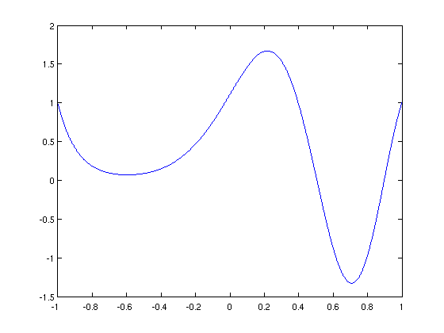
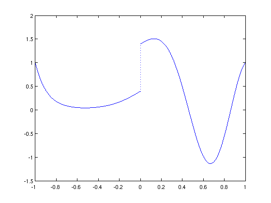
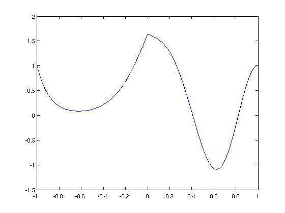
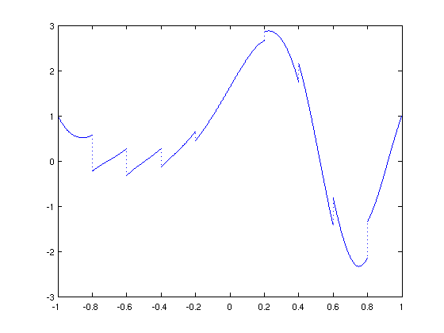

Jump Conditions in BVPS
Nick Hale, 25th November 2011
(Chebfun Example ode/JumpConditions.m)
Chebfun has recently added support for jump conditions in solutions to differential equations. Here we'll demonstrate this on a few toy examples.
Let's start with a simple linear ODE
N = chebop(@(x,u) 1e-2*diff(u,2) + sin(x).*u);
and add some dirichlet boundary conditions
N.lbc = 1; N.rbc = 1;
Now let's solve this as it is (i.e., without jumps) for reference.
u1 = N\0 plot(u1)
u1 =
chebfun column (1 smooth piece)
interval length endpoint values
[ -1, 1] 47 1 1
vertical scale = 1.7
 Suppose we want to add a jump condition at the origin. To do this we'd use the .bc field as follows
N.bc = @(x,u) feval(u,0,'right') - feval(u,0,'left') - 1; u2 = N\0 plot(u2)
u2 =
chebfun column (2 smooth pieces)
interval length endpoint values
[ -1, 0] 25 1 0.39
[ 0, 1] 27 1.4 1
Total length = 52 vertical scale = 1
 The above notation is a bit clunky, and the syntax 'jump' can be used instead. For example, we get the same result as above with
N.bc = @(x,u) jump(u,0) - 1; u3 = N\0 norm(u3-u2)
u3 =
chebfun column (2 smooth pieces)
interval length endpoint values
[ -1, 0] 25 1 0.39
[ 0, 1] 27 1.4 1
Total length = 52 vertical scale = 1
ans =
0
We can quickly around and make a jump appear instead in the derivative
N.bc = @(x,u) jump(diff(u),0) + 2*pi; u4 = N\0 plot(u4)
u4 =
chebfun column (2 smooth pieces)
interval length endpoint values
[ -1, 0] 30 1 1.6
[ 0, 1] 26 1.6 1
Total length = 56 vertical scale = 1.6
 Or go crazy and introduce multiple jumps!
N.bc = @(x,u) [jump(u,-.8:.2:.8) - (-.8:.2:.8),...
jump(diff(u),-.8:.2:.8) + (-.8:.2:.8)];
u5 = N\0
plot(u5)
u5 =
chebfun column (10 smooth pieces)
interval length endpoint values
[ -1, -0.8] 14 1 0.57
[ -0.8, -0.6] 14 -0.23 0.27
[ -0.6, -0.4] 14 -0.33 0.27
[ -0.4, -0.2] 13 -0.13 0.65
[ -0.2, 0] 19 0.45 1.6
[ 0, 0.2] 14 1.6 2.7
[ 0.2, 0.4] 14 2.9 1.8
[ 0.4, 0.6] 14 2.2 -1.4
[ 0.6, 0.8] 14 -0.82 -2.1
[ 0.8, 1] 14 -1.3 1
Total length = 144 vertical scale = 1
 I'd be very interested to hear if you have any practical problems which require these kinds of conditions!